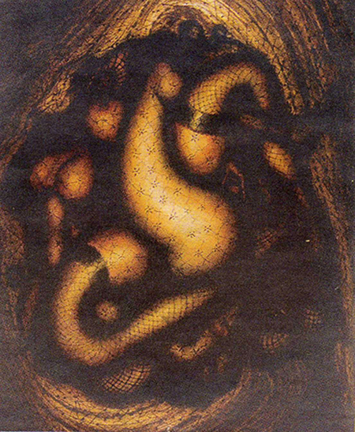

la Drag-Queen
Mon lexique:
La drag-queen : personne (homme, femme, ou "non-binaire", —les hommes restent majoritaires) construisant une identité féminine volontairement basée sur des archétypes de façon temporaire, généralement dans un but d'animation ou dans le cadre d'un spectacle incluant du chant, de la danse, du lip-sync, du stand-up, de l'imitation. Comme tout déguisement, le fait de s'habiller en drag-queen n'est une indication ni sur l'orientation sexuelle de la personne concernée, ni sur sa véritable identité de genre ; une drag-queen n'est pas une personne transsexuelle.
Au milieu d’une scène elle tournoie, éblouit nos yeux de paillettes et de maquillage un peu lourd. Elle nous jette sa liberté et son bonheur à la figure, son corps nous hurle de la regarder tandis que sa bouche fait rire. Rire, mais non sans critiquer au passage les aspects de la société qui lui déplaisent, ceux qui bloquent, qui freinent, qui empêchent de vivre librement et de montrer au monde qui nous sommes vraiment. Elle se bat pour elle-même, mais surtout pour nous tous. Elle brille pour attirer les regards et faire se tendrent les oreilles. Elle choque pour attirer l’attention de ceux qui refusent de voir.
La drag-queen veut vous montrer bien plus que son déguisement de femme. L’acte même de se travestir est extrêmement subversif,
Mon lexique:
Subversif :
qui est susceptible de bouleverser, les institutions, les principes, les valeurs reçues; qui menace l'ordre établi. c’est une transgression des normes et du genre. Un beau pied de nez à ceux qui disent « cela ne se fait pas ».
C’est d’abord un spectacle mais pas juste un spectacle.
TRANSFORMATION
La première chose à entendre, c’est que chaque drag-queen passe d’abord par un processus de transformation avant d’arriver à l’objet protéique que vous voyez sur scène. Car contrairement à une personne transgenre ou transsexuelle, le drag
Mon lexique:
Le drag :
désigne la pratique qui consiste à être une drag-queen.
// le sport et le sportif n’engage pas un aspect permanent. La drag-queen apparait de manière ponctuelle, deux fois par semaine, trois fois par an comme une fois chaque soir.
Dans Quand la sociologie visuelle ausculte les normes de genre, Arnaud Alessandrin et Lætitia Franquet parlent de passer par un sas de déconditionnement de la masculinité, avant d’entamer le véritable processus de transformation. J’aime à voir cette métamorphose comme Soulages traitait ses matrices de gravure. Toujours aller au-delà du processus habituel, Pierre Soulages,
Eau-forte XL, 1996au-delà de la matière jusqu’à passer au-dessus pour créer quelque chose de nouveau, mettre le processus en avant en faisant de la matrice l’œuvre. Lorsque que l’on voit les tenues de Sasha Velour Sasha Velour,
photographiée par Adam Ouahmane, 2018 ou Enza Fragola Enza Fragola,
photographiée par Alice Giorgi, 2018, on ressent l’excès, l’onirisme qui a suivi le processus pour arriver à un résultat aussi époustouflant. Dans leur tenue, j’ai l’impression de voir l’univers de Miyazaki, toujours en mouvement, loin des frontières de la réalité. Le château ambulant,
dans Le château ambulant,
Hayao Miyazaki, 2004 Ses châteaux ne tiennent pas debout mais qu’importe.
Cette transformation est extrêmement libératrice : elle autorise à montrer autre chose que ce que l’on est le jour. Elle donne accès au pouvoir de se re-présenter soi-même, sous un nouvel aspect. C’est une chose qu’a expérimentée Marcel Duchamp, qui s’est réinventé en une femme avec une production littéraire et plastique : Rrose Sélavy, Rrose Sélavy,
Man Ray, 1920 qui est tout à la fois une œuvre et à l’origine d’œuvres. Dans une autre mesure, Andy Wharol à lui aussi fait l’expérience de cette transformation, avec sa série photographique Self-Portrait in drag, Self-Portrait in drag,
Andy Wahrol, 1981 en 1981. Il est intéressant de voir que Warhol, même s’il ne comprenait pas les identités des travestis qu’il rencontrait, a tout de même voulu prendre leur place le temps d’une série photographique. Je vois dans cette démarche une envie d’explorer la répercussion de la transformation sur la personne elle-même, et j’ai d’ailleurs moi aussi expérimenté cela.
 par Ines Gamboa
par Ines Gamboa
Ce travestissement enrichit la perception que chacun peut avoir de lui-même. En créant un personnage fictif, la personne s’approprie une nouvelle image. Et celle-ci prend forcément racine dans l’histoire et la conscience de soi -François Mauriac : « Les personnages sont faits du plus trouble de nous-même » 1972. C’est ce qu’Aaron Walker a voulu explorer dans sa série photographique Dragformation,Dragformation,
Aaron Walker, 2017 en photographiant d’abord l’homme (ou la femme) puis -après des heures de préparation- la drag-queen. Interviewé par Vice, il raconte que la plus grande transformation n’est pas tant celle physique, mais plutôt la prise de confiance proportionnelle à l’avancée du processus. Le processus externe en génère un interne, à la manière de la transformation physique de Gregor dans La métamorphose de Kafka, publié en 1915, qui engendre une transformation morale des protagonistes gravitant autour de lui. Dans un autre registre, avec l’affiche de Cassandre Dubo, Dubon, Dubonnet en 1932, on peut voir à l’extérieur ce qui s’opère à l’intérieur…Dubo, Dubon, Dubonnet,
Cassandre, 1932
J’ai aussi rapproché la transformation de la personne en drag-queen au mythe de Protée, Protée et Aristée,
Wenceslas HOLLAR, 1650dieu de la mythologie qui pouvait s’assimiler à tout et prendre toute sorte de forme. C’est une transformation qui ne se fige jamais, le mouvement constant implique de ne pas se résoudre à une seule forme. Et c’est là le propos du drag… ne pas se limiter.
EXUTOIRE ET LIBERATION
Car être une drag-queen, c’est pour la plupart un formidable exutoire. Cet excès d’énergie que le drag libère, c’est un aspect de personnalité que la société n’autorise pas dans la vie quotidienne. Ni convention ni règle, ni jugement ni barrière, le drag permet à ceux du jour de faire tomber les vestes pour dévoiler les corps de reines d’une nuit. Dans un article de Têtu, Enza Fragola se dit « révoltée contre la réalité ». Le drag lui permet de réaliser des rêves d’enfance et de se ré-imaginer sans les limites de la société : « Je suis un peu ce garçon qui aimait les bijoux, qui a été contrarié par les normes de la société et qui prend une grosse revanche. ». Dans un article d’Heeboo, Karma décrit le drag comme un échappatoire à la dureté de la vie, « c’est mon petit médicament quoi. ». Lors d’une de ses émissions, RuPaul ©RuPaulDragRace
RuPaul est la drag-queen la plus célébre des Etats-Unis, et surement du monde. C'est elle qui mène RuPaul Drag Race, l'émission américaine qui a redooner de la visibilité au drag dans le monde entier. a dit « Quand tu n’en peux plus d’être toi, le drag te permet d’être quelqu’un d’autre ». Le drag est libérateur, c’est la catharsis de ceux qui veulent exister plus fort.
Dans un l’atelier que je mènerai sous peu avec Alexis Plard, je souhaite étudier comment cette libération est envisagée par des jeunes gens ayant des clés de la communication visuelle, et donc comment ils se présentent et se re-présentent. Il leur sera demandé de produire un premier objet autobiographique, puis de ré-envisager cette image d’eux-mêmes en allant beaucoup plus loin : s’il n’y avait aucune contrainte, règles, tabous, interdits, modèles, comment aimeraient-ils être?
Je trouve très beau dans le drag d’assister à l’envol des carcans imposés et de ceux que l’on s’impose. Comme une sortie de l’aliénation, la personne se libère en devenant drag-queen. Enza Fragola a dit : « C’est pendant les Jeux Olympiques de drag-queens à Amsterdam que je me suis senti.e pour la première fois libre, en contrôle, que je savais ce que je faisais. ». Dans le documentaire Marsha P. Jonhson : histoire d’une légende, au travers d’une archive vidéo, nous assistons au dialogue entre la drag-queen Marsha et un homme :
« ⁃ Marsha Jonhson, reine de Greenwich Village. une des personne les plus courageuse. J’ai toujours adoré… Je n’ai jamais eu le courage de me travestir. Cette personne en a eu le courage. Et bravo à lui. À elle. Peu importe ce qu’il veut être. En plus, il s’en tape de porter des vêtements d’homme ou de femme. Non? Il est libre.
⁃ C’est vrai. » Extrait du documentaire Marsha P. Jonhson: histoire d'une légende ,
David France, 2017
Mais ce qui me touche le plus, c’est que le drag n’est pas seulement un affranchissement égoïste, c’est une revendication de la liberté pour tous. Dans la lignée de Woodrow Wilson, le drag est l’affirmation de disposer de soi comme bon nous semble, un chemin grisant, où l’on se jette à pleine vitesse sur les routes qui explorent les frontières du possible et dépassent le convenable, pour déclarer que l’on s’appartient. Pierre Molinier, lorsque l’on veut censurer son tableau Le Grand combat  Le Grand Combat,
Pierre Molinier, 1951 lors d’une exposition en 1951, dira sensiblement la même chose avec des mots que j’apprécie beaucoup : « Allez donc enfanter dans la nuit par le coït honteux, seul permis par la morale publique faite à l’usage des cons! Que me reprochez-vous dans mon œuvre ? D’être moi-même ? Allez donc, vous crevez de conformisme ! Vous êtes des esclaves ! »
Cette prise de pouvoir sur soi et le refus de se laisser manipuler par des codes me renvoie aux sculptures de Robert Moris, Felt Felt,
Robert Moris, 1968, 1968, une apologie de l’informe qui souhaite critiquer la sculpture occidentale qui soumet la matière à un paramètre extérieur —la main de l’homme— pour lui donner une forme figée. Ici ce ne sera pas l’informe mais plutôt l’expression criante des formes qui nous diront liberté. Cette convocation du son grâce à la forme, se voit dans les affiches du mouvement DADA. Avec Kleine Dada Soirée, de Theo van Dœsburg et Kurt Schwitters en 1922, c’est une affiche bavarde Kleine Dada Soirée,
Theo van Dœsburg et Kurt Schwitters, 1922 qui nous saute à la figure, remet en cause le langage et se joue de l’organisation spatiale. Au premier abord on peut voir de nombreuses similitudes entre le drag et le mouvement DADA, qui se propose de détruire toutes les conventions, de réveiller les consciences, et de prendre de la distance avec la création contemporaine. Comme la plupart —pour ne pas dire tous— des mouvements artistiques / graphiques / architecturaux / et tous leurs amis du design, le DADA se construit en contraste du précédent mouvement.HG: Le Serment des Horaces, David, 1785
HD: Les hasards heureux de l'Escarpolette,
Honoré Fragonard, 1968
BG: la cathédrale Saint-Pierre, début XIIe siècle
BD: la cathédrale Notre-Dame d'Amiens, 1220 Le drag, lui, se construit "en liberté", sans forcément entrer en conflit ou en opposition. On peut être semblable, on peut être entre deux, on peut être contre, on peut innover, l’essentiel c’est de pouvoir s’exprimer comme on le veut, aussi bien par nos habits que par les cris qui nous secouent, et célébrer la culture de la diversité.
LE VÊTEMENT COMME LANGAGE
Une des origines du drag s’est vu naître dans les quartiers noirs de New-York, dans les années 80. Au cœur des Ballrooms, Extrait du documentaire Paris is burning,
Jennie Livingston, 1991 on défile comme des mannequins sur un podium, déguisé, maquillé. La nuit, on ment. Car ce sont de jeunes hommes noirs, homosexuels et/ou transgenres, qui dansent sous ces lumières, habillés comme la bourgeoise blanche des beaux quartiers. S’approprier ses vêtements, c’est devenir celle qui est à l’abri du racisme, de la pauvreté et de l’homophobie, tandis qu’eux-mêmes sont rejetés, niés et oubliés dans leur quartier. « On est dans une ballroom, les catégories ont été créées pour faire de nos rêves une réalité, Extrait de l'épisode 4, saison 1 de Pose,
Ryan Murphy, 2018 être qui on veut l’espace d’un instant, et voici l’image que je veux donner! » proclame une des protagonistes de Pose, une série qui explore l’univers des ballrooms dans le New-York des années 80. Le vêtement parle de nos rêves.
Quelques épisodes plus loin dans Pose, Stan Bowes, un homme marié et travaillant à la Trump Tower déclarera à Angel, une transgenre, : « Je vis pas pour de vrai, je crois pas pour de vrai, je fais qu’accumuler. Je suis un produit. L’homme blanc moyen de la classe moyenne. Mais toi tu es qui tu es, (…). C’est moi qui porte un déguisement. » Extrait de l'épisode 2, saison 1 de Pose,
Ryan Murphy, 2018 Lui qui est dans la norme se sent obligé de se déguiser pour se faire accepter, tandis qu’Angel —trans et drag-queen— s’émancipe des attentes au travers du vêtement pour s’approprier l’identité de femme qu’elle souhaite avoir. La transgression engendre la visibilité, on nous remarque. C’est une mécanique dont se sont aussi emparées les Femen, mais dans l’application inverse, on enlève pour se faire voir. Les femens à Paris,
Charles Platiau, 2013
On sait le pouvoir évocateur du vêtement, il suffit de voir les productions d’Issey Miyake Pleats Please,
photographié par Francis Giacobetti, 2012 ou les robes de Peau d’Âne. La robe printemps et la robe soleil dans Peau d'ane, Jacques Demy, 1970 Mais qu’en est-il lorsqu’il parle de nous-même? Søren Aabye Kierkegaard (1813-1855), théologien protesant, écrivain et philosophe, disait que le vêtement signe l’accès à la personnalité, tandis que RuPaul de manière plus efficace et populaire : « You’re born naked. The rest is drag. ». Le vêtement est indicateur de l’identité sociale pour une société qui regarde le corps habillé comme un signe, et le drag se saisit de ça. Le travestissement est une démonstration visuelle que l’on offre au regard du monde, le vêtement devient un espace de liberté et de responsabilité de soi. Clérambault, dans une de ses séries photographiques, envisage le vêtement de manière plus indépendante du corps. Doupble page du livre Gaetan Gatian de Clérambault, psychiatre et photographe,
sous la direction de Serge Tisseron, 1990 Au fil des successions des différents clichés, ce n’est bientôt plus la façon dont le drapé accompagne le corps qui s’impose, mais la cinétique propre du vêtement, son relief personnel, sa façon de se tenir droit ou au contraire de s’affaisser. C’est le drapé qui permet, lui aussi, l’expression du corps. Un vêtement autonome chez Clérambault, tandis que pour le drag, c’est la manière et par qui il est porté, qui va faire sens.
JEU DE CODES
Car pour les drag-queens la transgression du travestissement passe par un jeu avec les codes de représentation des genres. J’ai l’intention d’étudier ces derniers au travers d’un atelier avec une classe de seconde du lycée. Il leur sera demandé de représenter successivement un homme, une femme, une personne avec les deux genres, une personne sans genre et une drag-queen. Par la suite nous regarderons ensemble ces représentations en pointant les différents codes utilisés, et seront soulevés différentes questions : pourquoi ai-je utilisé ces codes? Suis-je d’accord avec ses représentations? Est-ce discriminant? Cet atelier pourra être croisé avec celui que j’ai mené l’année précédente dans une classe de CE1 sur la discrimination de genre. Peintures de trois élèves de la classe de CE1 d'une école primaire de Toulouse, 2017
Il m’a paru nécessaire de faire ces deux ateliers afin de bien cerner les codes de genres ancrés dans l’imaginaire des gens. Car les drag-queens jouent de ces représentations, se considèrent même comme au-dessus des genres. « Il y a quelque chose qui est de l’ordre du brouillage du genre » décrypte le sociologue Arnaud Alessandrin, les drag-queens essayant d’en souligner sa « dimension essentiellement artificielle ». Par exemple, on voit beaucoup de drag-queens à barbe (Shanna BananaShanna Banana
par Alice Giorgi, 2018, Enza FragolaEnza Fragola
par Quentin Houdas, 2017 ou en Autriche Conchita Wurst Conchita Wurst,
© Getty Image), elles mettent en avant la forme bicéphale du drag, mi-femme, mi-homme, une manière de remettre en question l’aspect manichéen de la représentation des codes aujourd’hui, qui ferment les yeux sur les entre-deux. «En quelque sorte, nous sommes des activistes de son démantèlement car nous concevons le genre comme résultant des constructions sociales, il n’est donc pas figé.». Aux Etats-unis, il y a même certaines maternelles qui accueillent des drag-queens pour expliquer la théorie du genre aux enfants, histoire de sortir un peu des représentations segmentés et bien compartimentés Les jouets,
Pellerin-Epinal, fin du XIXe siecle dans de petites cases —à la manière des puzzles humains pour les enfants, afin d’être bien certain qu’ils ne commettent pas l’hérésie de mettre des chaussures d’hommes à une femme avec des cheveux courts.
La drag-queen refuse la position obsolète selon laquelle le genre est seulement naturel et inné, celle qui oublie la dimension sociale de l’accès à l’identité. Elle en appelle à l’ouverture des frontières entre les genres et en cherchant à inventer « une idée du neutre qui échapperait au sexuel » (Monique Wittig, 1980), comme des créateurs tels que le photographe Pierre Molinier Planche 20 d'un album consitué par Pierre Molinier à la fin des années 60 ou le réalisateur Pedro Almodovar (des films défendant la culture queer comme Tout Sur Ma Mère),
 Extrait de Tout Sur Ma Mère,
Extrait de Tout Sur Ma Mère,Pedro Almodóvar, 1999 ou des icônes de la culture rock comme David Bowie, Mylène Farmer, Lady Gaga ou Madonna.
On sent un réel besoin de re-questionner ce qui est normal, comme l’ont fait les lithographies Le monde à l’envers. Une planche Le monde à l'envers,
Olivier Pinot, 1873 L’idée de ces représentations était d’inverser les normes. Ces petites vignettes, montrant un monde où tout était possible, étaient aussi un moyen de ridiculiser le pouvoir, d’avoir un message politique, tout en contournant la censure. Le drag joue au même jeu, attirer l’attention sur les contraintes ridicules des codes conventionnels du genre.
« Tout ce que vous prenez pour votre identité dans ce monde matériel est en réalité un déguisement. Vous n’êtes pas votre religion. Vous n’êtes pas votre couleur de peau. Vous n’êtes pas votre genre, vos opinions politiques, votre carrière ou votre statut marital. Vous n’êtes rien de ces choses superficielles que le monde valorise. Le vrai vous est la force qui a créé l’univers entier! Voilà, je l’ai dit! J’ai levé le voile sur ce que votre ego ne veut pas que vous entendiez : vous êtes la Source, l’Élu, la grande Enchilada. Mais eh, on se calme… on n’a pas besoin de parler de ça maintenant… » tweete RuPaul en 2013, « La plupart des gens ne veulent pas se réveiller de cette illusion. C’est pour cette raison que les drag-queens les mettent mal à l’aise. Les drag-queens par essence se moquent des rôles que les gens jouent.»
DIVERTISSEMENT SUBVERSIF, MILITANT ET PORTE PAROLE
Il est peu probable que vous ayez déjà entendu une foule scander le nom d’un défenseur des droits LGBT. C’est pourtant ce que j’ai vécu il y a quelques semaines, lorsque j’ai assisté à un match de Lucha Libre. J’ai vu des centaines de mains en porte-voix pour hurler plus fort leur soutien à Cassandro, le catcheur drag-queen.
Bande-annonce du documentaire Cassandro, the exotico!,
Marie Losier, 2018 Des pieds qui frappent les gradins, rythmant la fureur qui nous traversait tous, tous portés dans un élan de solidarité, pour soutenir el exotico.
Se servir du spectacle pour faire passer des messages, là sont les armes, plus ou moins passives, des drag-queens. Fédérer des étrangers autours de questions de société. À la manière de Beaumarchais, ou de certains comiques, elles se servent du spectacle et de l’humour pour pointer du doigt ce qui ne leur convient pas. On peut le voir dans Moi, présidente, un projet vidéo qui est né durant la période des élections en 2016. On y voit des drag-queens et un drag-king nous présenter leur programme présidentiel. Le fondateur du projet a déclaré dans une interview pour Tétu : « Il y a vraiment une volonté de parodier et, entre les punchlines, de distiller un message. C’est pour ça qu’on a choisi des drags qu’on savait engagées, notamment pour la défense des minorités».
En ne se revendiquant pas authentique, la drag-queen peut jouer d’une complicité avec le spectateur, entre le vrai et le faux, le cynisme, la moquerie. En mêlant ceci à une utilisation consciente et dosée d’éléments de transgression, la drag-queen choque, fait rire, saupoudrant au passage ses revendications près de nos oreilles. Le drag détourne le masque que la société impose et en fait un motif d’amusement.
Mais depuis les débuts du drag, elles ne restent pas enfermées dans un cabaret. Les drag-queens ont un rôle très important dans la culture gay, ce fut les premières à crier haut et fort qu’elles existent, que les gays existent et surtout qu’ils en ont le droit. Pionnières dans la lutte moderne pour les droits LGBT, en tête des Gay-pride, elles sont les portes-paroles de la communauté LGBT, comme Marsha Jonhson, Marsha P. Johnson speaks in favor of Intro 384, a gay and lesbian civil rights ordinance,
Bettye Lane<, 1978 des années 60 aux années 90. Dans cet article, on parle des drag-queens comme les chamans de la culture gay. Dans un autre, on dit de la drag qu’elle est le porte-étendard de la communauté LGBT. « C’est la seule qui porte les couleurs de la communauté sur elle, la seule que l’on peut remarquer dans la rue. Elle n’est pas là pour que l’on se reconnaisse en elle, mais pour porter un drapeau » (Maria Allass dans le même article). Sasha Velour, une drag-queen américaine, considère la drag-queen comme la gardienne de l’histoire gay. La drag profite de sa visibilité pour rayonner sur toute leur communauté, portant des combats pour les autres et pas seulement pour elle-même.
Et cela va plus loin que les droits LGBT, les drag-queens organisent des soirées pour d’autres luttes, celle des migrants par exemple. Les drags vont se mobiliser et parler aux gens avec des tracts du BAAM, une association qui s’occupe de l’accueil des migrants. Au vu des luttes qu’a déjà traversé la communauté LGBT, il est évident pour elles de se mobiliser pour d’autres. Dans un autre domaine, Emerson Munduruku, biologiste brésilien : « À un moment de ma vie je me suis demandé comment je pourrais travailler en faveur de la préservation de l’environnement ». Cette réflexion l’aura mené à faire du drag et à créer Uyra Sodoma qui se déplace dans des villages d’Amazonie pour sensibiliser les plus jeunes à la protection de la nature. Urya Sodoma,
par R. Oliveira, 2016 Quant à Enza Fragola, elle a mené une action pour le sida Vue du site de Tetu au doux nom de « Sidragction » en 2017.
Militant « Après, je ne peux pas dissocier la dimension artistique des drag-queens du combat social contre la discrimination de genre. »
Matéa Natachate
« C’est pour moi un acte militant que d’avoir créé Lolla Wesh. »
Arnaud.
« [Mon principal trait de caractère] C’est bien évidemment le militantisme ou la révolte. »
Emily Tante
« Être une drag-queen est forcément politique. »
Maxime Donzel
« On veut changer le monde ! »
Sasha Velour
« Ce pour quoi on continue de lutter, c'est la visibilité, l'acceptation. Se mettre en talons et sortir dans la rue c'est un geste très politique. »
Alejandro Rodrigo-Lagunas
« Marsha était une icône du mouvement homosexuel. Marsha et moi, on était les libératrices. Les sans-abri et les drag queens étaient les avant-gardistes du mouvement. On était en première ligne, on repoussait les flics. On n’avait pas peur de se faire cogner. »
Sylvia Rivera pour la liberté, la reconnaissance de leurs droits, de leur condition et du droit à la différence, elles investissent même les librairies jeunesses pour éduquer doucement à ces questions. La première fois a eu lieu à San Francisco en 2015, et j’ai pu assister à la première en France, à Ombres Blanches.
 par Ines Gamboa, 2018
La lecture de contes était destinée aux enfants de 4 à 7 ans, et menée par deux
drag-queens. Lorsque Shanna Banana et Sassa Grave sont apparues, il n’y a eu aucun mouvement de surprise chez
les enfants. Elles ont lu quatre contes qui avaient des sujets prônant
la différence et la diversité
par Ines Gamboa, 2018
La lecture de contes était destinée aux enfants de 4 à 7 ans, et menée par deux
drag-queens. Lorsque Shanna Banana et Sassa Grave sont apparues, il n’y a eu aucun mouvement de surprise chez
les enfants. Elles ont lu quatre contes qui avaient des sujets prônant
la différence et la diversité  par Ines Gamboa, 2018(un petit
manchot qui a deux papa, Cendrillon qui ne veut pas se marier, Anatole qui traine une casserole et Marlène qui
s’approprie son surnom « baleine »). Assises devant les petits, elles jouaient un peu les histoires, ajoutaient
quelques commentaires, de petites blagues, posaient des questions aux enfants.
Il y avait une vraie interaction
par Ines Gamboa, 2018(un petit
manchot qui a deux papa, Cendrillon qui ne veut pas se marier, Anatole qui traine une casserole et Marlène qui
s’approprie son surnom « baleine »). Assises devant les petits, elles jouaient un peu les histoires, ajoutaient
quelques commentaires, de petites blagues, posaient des questions aux enfants.
Il y avait une vraie interaction
 par Ines Gamboa, 2018entre les enfants et les drags, pas de gêne, pas d’étonnement, pas de rejet. Après la lecture, elles ont posé
des questions aux enfants, sur comment ils avaient interprété les histoires, ce qui leur avait plu, est-ce
qu’ils voyaient la différence autour d’eux, si c’était normal d’avoir deux papas… Ce fut un moment d’une
agréable simplicité.
par Ines Gamboa, 2018entre les enfants et les drags, pas de gêne, pas d’étonnement, pas de rejet. Après la lecture, elles ont posé
des questions aux enfants, sur comment ils avaient interprété les histoires, ce qui leur avait plu, est-ce
qu’ils voyaient la différence autour d’eux, si c’était normal d’avoir deux papas… Ce fut un moment d’une
agréable simplicité.
VISBILITÉ
Mais les drag-queens jouissent tout de même d’une visibilité assez faible lorsque que l’on n’est pas du milieu. Concernant la lecture à Ombres Blanches, j’ai eu l’information sur le compte instagram d’une drag-queen, et pas sur un média général. On trouve assez peu d’articles sur les drag-queens dans les journaux populaires. Dans la plupart, le mot drag-queen apparait de manière anecdotique. Pour les articles dont le sujet principal est vraiment le drag, il y a systématiquement une explication sur ce que c’est, ce qui révéle une méconnaissance de la part des lecteurs. À part dans La Croix, on sent une curiosité et une bienveillance (on en parle un peu comme la découverte du mois). Ce sera dans les médias LGBT que l’on va trouver énormément d’articles sur le sujet, et qui vont plus loin que « qu’est ce qu’une drag-queen ». Dans plus de 4/5 des articles, on parle de l’aspect militant et politique du drag, surtout sur le jeu des genres.
Pour la France, c’est surtout Enza Fragola la porte-parole. On parle beaucoup des Américaines, des Françaises, rien pour le reste du monde. Ah, si, une israélienne au détour d’une page web. On trouve beaucoup de témoignage, les journalistes parlent assez peu à la place des drag-queens.
On peut donc voir que les drag-queens sont assez peu médiatisées, mais lorsque c’est le cas c’est positivement et avec intérêt.
VERS LA POURSUITE DU PROJET
Au vu de mes recherches et de l’évolution de ma position par rapport au sujet, je sais aujourd’hui que je ne veux pas faire un diplôme sur les drags, mais pour les drag-queen. Pour cela, j’ai entamé les prises de contact avec la communauté toulousaine des drags et une drag parisienne. Les rencontrer va me permettre de mieux comprendre ce qu’implique cette culture, de récolter les informations à la source, sans le filtre du journaliste ou de l’universitaire coincé derrière son bureau. Dans nos premiers contacts, j’ai émis mon envie de faire des ateliers graphiques avec elles et elles se sont montrées très enthousiastes. Et d’autant plus lorsque j’ai parlé de ma volonté de monter un projet réel, autour de leurs besoins et avec leur appui. Quitte à passer presque un an sur un projet, autant qu’il serve également à quelqu’un.
Entre formes d’expression et expression des formes, le drag soulève des questionnements en lien avec le design graphique que je souhaite étudier en m’appuyant sur cette pratique : Comment se rendre visible pour se rendre audible/lisible? Pourquoi utiliser l’image pour se faire entendre? En continuant à lier ceci à des pratiques engagées, notamment pour la liberté. J’explorerai le processus de transformation de l’homme à la drag-queen, comment le signifier? Comment réinvestir ce processus dans la pratique du graphisme?